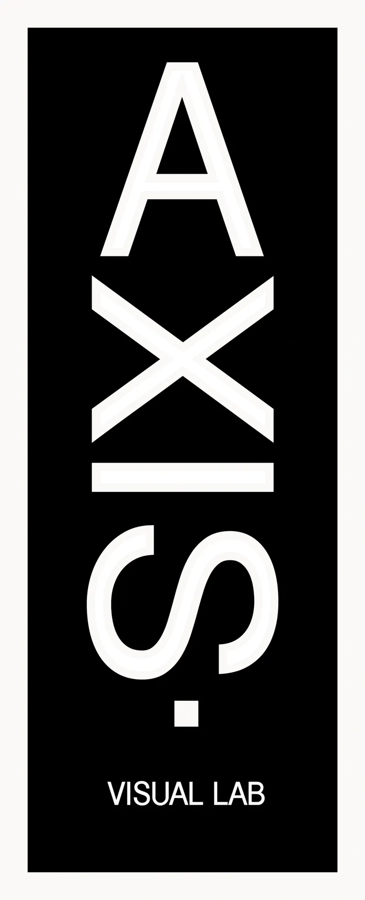
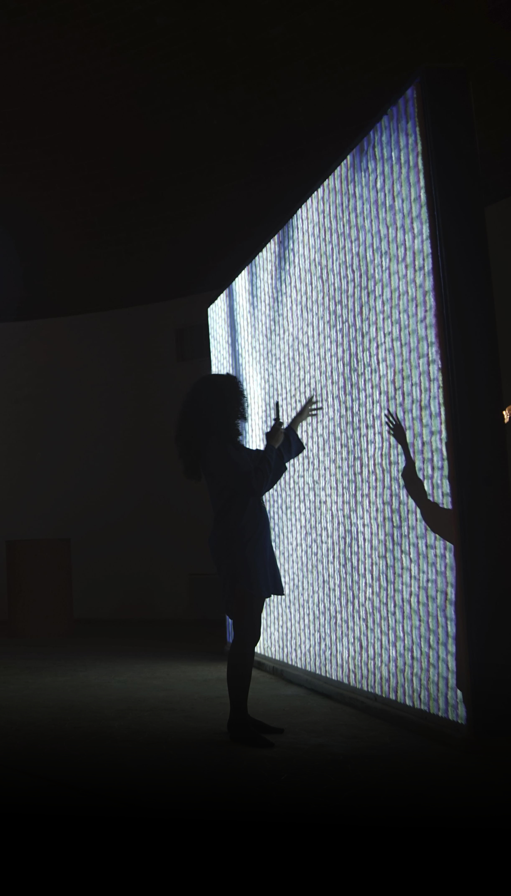

AXIS.Visual Lab
An independent artists' collective founded in 2013 by Milton Raggi & Aaron R. Moreno (Onerom). Guided by a deep interest in technology, the collective explores its creative potential as both a medium and a source of artistic inquiry.
Its practice encompasses audiovisual, interactive, and immersive experiences, with a particular emphasis on video mapping and the transformation of public spaces. AXIS.Visual Lab also collaborates with artists, curators, and cultural institutions across a wide range of interdisciplinary projects and exhibition platforms.
Dedicated to advancing technology-based art within Cuba's contemporary art scene, AXIS.Visual Lab works to increase the visibility of digital and new media practices, foster interdisciplinary exchange, and contribute to the development of a growing network of artists and practitioners working at the intersection of art and technology.
Main Projects →
In this section you will find large scale projection mappings, immersive audiovisual installations, sound art and a lot of other cool stuff.

Production & Collaboration →In the continuous pursuit of growing our community, we help visual artist colleagues to produce their works and exhibitions. We also collaborate with institutions and curators in diverse art spaces.
 Education →
Education →
We at AXIS.Visual Lab know very well what isolation and lack of resources mean, so we believe in sharing information and growing together. One of our main objectives is to educate interested members of our community.
Meet the Team

Aaron R. Moreno

Milton Raggi Vinueza
Get in Touch
Send an email